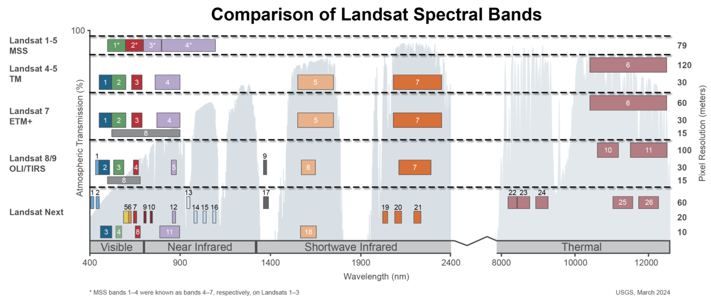

1 Introduction
1.1 Big Data

1.2 Geospatial Big Data
NASA was generating 12.1TB of data every single day (in 2017)

Satellites provide over 150 terabytes per day
 Source:
ESA
Source:
ESA
Landsat Data


1.3 Cloud Computing

Can you estimate how many Landsat scenes are needed to
cover this area?

What difficulties arise when the study area is
large?
 Landsat 9, 01.7.2024 - 17.7.2024
Landsat 9, 01.7.2024 - 17.7.2024
1.4 Google Earth Engine

1.5 Getting started with GEE
The Google Earth Engine Interface

JavaScript Basic in GEE
1.6 Exploring GEE Data Catalog
Raster vs. Vector

Raster
Resolution: there are four types of resolution:
radiometric, spatial, spectral, and temporal. “Spatial resolution
relates to pixel size, temporal resolution to observation frequency,
radiometric resolution to the number of unique values, and spectral
resolution to binwidth in the electromagnetic spectrum.”

Landsat 8 vs. Sentinel 2

Vector
1.7 Import data to GEE
Import drone imagery and shapefile provided in “Data” session to your GEE account.
1.8 Export data from GEE
2 Data Management, Analysis, and Applications
2.1 Remote Sensing Indices
Remote indices (spectral indices) are used to enhance particular land surface features or properties, e.g. vegetation, soil, water, urban, fires…
 USGS
Water Indices - NDWI
2.2 Cloud Masking

2.3 Reducer
Ref: Reducer
2.4 Image Composition
Sentinel 2 (Median Composition, Jun-Jul 2020)
3 Land Cover Classification in GEE
3.1 Select/Identify Area of Interest

3.3 Collect Samples
Different sampling approaches and their major advantages and
drawbacks.
A simple, fast, and accurate method